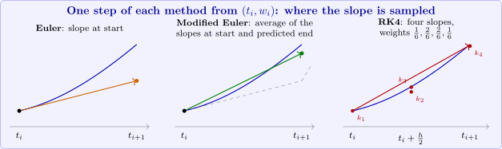

9.4 Runge–Kutta methods
Runge–Kutta methods evaluate \(f\) at several points within each step and combine the values so as to reproduce the Taylor method to a given order.
Second-order methods
Look for a method \(w_{i+1} = w_i+h\,a_1f(t_i+\alpha _1,w_i+\beta _1)\) that agrees with \(T^{(2)} = f+\frac h2\left (f_t+f_yf\right )\) up to \(O(h^2)\). By Taylor’s Theorem in two variables, \[a_1f(t+\alpha _1,y+\beta _1) = a_1f+a_1\alpha _1f_t+a_1\beta _1f_y+O(\alpha _1^2+\beta _1^2) .\] Matching coefficients requires \(a_1 = 1\), \(\alpha _1 = \frac h2\) and \(\beta _1 = \frac h2f(t,y)\). This gives the midpoint method \[w_{i+1} = w_i+hf\!\left (t_i+\frac h2,\ w_i+\frac h2f(t_i,w_i)\right ),\] which evaluates the slope at the midpoint of the Euler step. Allowing two terms, \(a_1f(t,y)+a_2f(t+\alpha _2,y+\delta _2f(t,y))\), gives a one-parameter family of second-order methods; the choice \(a_1 = a_2 = \frac 12\), \(\alpha _2 = \delta _2 = h\) is the modified Euler method (also called Heun’s method or the improved Euler method): \[w_{i+1} = w_i+\frac h2\Bigl [f(t_i,w_i)+f\bigl (t_{i+1},\ w_i+hf(t_i,w_i)\bigr )\Bigr ].\] It takes an Euler step to predict \(w_{i+1}\), evaluates the slope there, and averages it with the slope at the start: the trapezoidal rule applied to \(\int _{t_i}^{t_{i+1}}y'\,dt\). Both methods have local truncation error \(O(h^2)\).
The classical fourth-order method
The most widely used method is the Runge–Kutta method of order four: \begin {align*} k_1 &= hf(t_i,w_i),\\ k_2 &= hf\!\left (t_i+\frac h2,\ w_i+\frac 12k_1\right ),\\ k_3 &= hf\!\left (t_i+\frac h2,\ w_i+\frac 12k_2\right ),\\ k_4 &= hf(t_{i+1},\ w_i+k_3),\\ w_{i+1} &= w_i+\frac 16(k_1+2k_2+2k_3+k_4). \end {align*}
It has local truncation error \(O(h^4)\), provided \(y\in C^5\). When \(f\) does not depend on \(y\), it reduces to Simpson’s rule for \(\int _{t_i}^{t_{i+1}}f(t)\,dt\).
Example 9.4.1. Apply the modified Euler, midpoint and fourth-order Runge–Kutta methods to the test problem with \(h = 0.2\).
Solution. For Runge–Kutta, the first step is \begin {align*} k_1 &= 0.2(1.5) = 0.3, & k_2 &= 0.2f(0.1,0.65) = 0.328,\\ k_3 &= 0.2f(0.1,0.664) = 0.3308, & k_4 &= 0.2f(0.2,0.8308) = 0.35816, \end {align*}
so \(w_1 = 0.5+\frac 16(0.3+0.656+0.6616+0.35816) = 0.8292933\), against \(y(0.2) = 0.8292986\). The results:
| \(t_i\) | exact | Euler | modified Euler | midpoint | RK4 |
| \(0.4\) | \(1.2140877\) | \(6.2\times 10^{-2}\) | \(7.2\times 10^{-3}\) | \(2.7\times 10^{-3}\) | \(1.1\times 10^{-5}\) |
| \(1.0\) | \(2.6408591\) | \(1.8\times 10^{-1}\) | \(2.3\times 10^{-2}\) | \(7.7\times 10^{-3}\) | \(3.6\times 10^{-5}\) |
| \(1.6\) | \(4.2834838\) | \(3.3\times 10^{-1}\) | \(4.8\times 10^{-2}\) | \(1.3\times 10^{-2}\) | \(7.4\times 10^{-5}\) |
| \(2.0\) | \(5.3054720\) | \(4.4\times 10^{-1}\) | \(7.2\times 10^{-2}\) | \(1.5\times 10^{-2}\) | \(1.1\times 10^{-4}\) |
(The entries are the errors \(|y(t_i)-w_i|\).) RK4 uses four evaluations of \(f\) per step, Euler one, so a fair comparison gives Euler a step of \(0.05\); even then its error at \(t = 2\) is \(0.127\), a thousand times larger than RK4’s. Halving \(h\) in RK4 divides its error at \(t = 2\) by about \(16\): \(1.1\times 10^{-4}\), \(7.0\times 10^{-6}\), \(4.4\times 10^{-7}\) for \(h = 0.2, 0.1, 0.05\), confirming fourth order.

Questions on this section
Stuck on something here? Ask below and it stays attached to this topic.